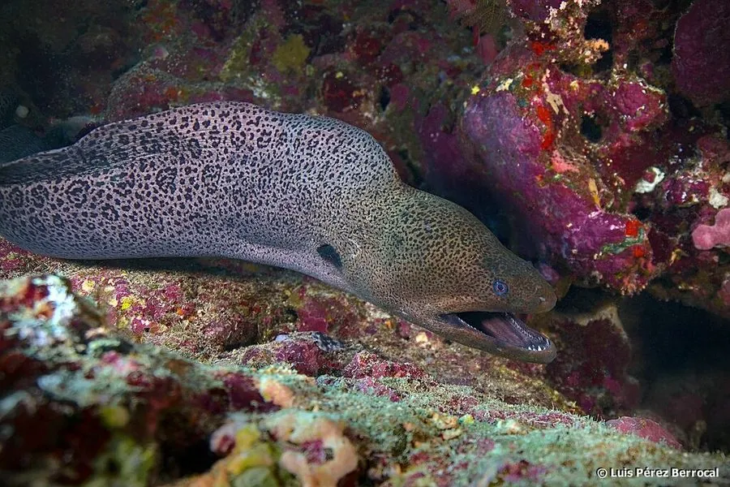

鱼类 · 动物界
裸胸鳝 Gymnothorax javanicus

印度洋—太平洋珊瑚礁中的大型海鳝，体色黄褐带黑色斑点，口大牙尖，常藏在礁缝中，是礁区顶级捕食者。
- 分类
- 门脊索动物门纲辐鳍鱼纲目鳗鲡目科海鳝科属裸胸鳝属
- 栖息环境
- 热带珊瑚礁和岩礁的缝隙与洞穴中
- 地理分布
- 印度洋—太平洋热带海域，中国南海和台湾周边有分布
- 保护级别
- IUCN 无危（LC）；中国未列入国家重点保护野生动物名录
物种志
裸胸鳝体呈长圆筒形，像蛇，头小，口大，上下颌长有尖锐的牙齿。体色黄褐或灰褐，全身布满黑色或深褐色斑点，皮肤光滑无鳞。成鱼体长一般 1.5–2.5 m，最大可达 3 m，体重可达 30 kg，是体型最大的海鳝之一。
裸胸鳝分布于印度洋—太平洋的热带海域，从红海、东非到日本、澳大利亚，中国南海和台湾周边有分布。它栖息在珊瑚礁和岩礁的缝隙中，白天多藏在洞里，夜间出来捕食，吃鱼类、甲壳类和头足类。裸胸鳝的牙齿向后弯曲，猎物一旦被咬住很难挣脱。它性情凶猛，受惊时会咬人。由于珊瑚礁退化和捕捞，其种群受到一定压力，目前 IUCN 评估为无危。
形态与习性
- 食性鱼类、甲壳类和头足类
- 体长一般 1.5–2.5 m，最大可达 3 m
- 体重最大可达 30 kg
- 活动节律白天藏在礁缝中，夜间出来捕食
- 牙齿尖锐且向后弯曲，猎物不易挣脱
- 性情凶猛，受惊时会咬人
趣味知识
- 裸胸鳝是体型最大的海鳝之一，最大可长到 3 m。
- 它常从礁缝中探出头，张嘴呼吸，看起来像在威吓。
- 裸胸鳝的牙齿向后弯曲，被咬住的猎物很难挣脱。